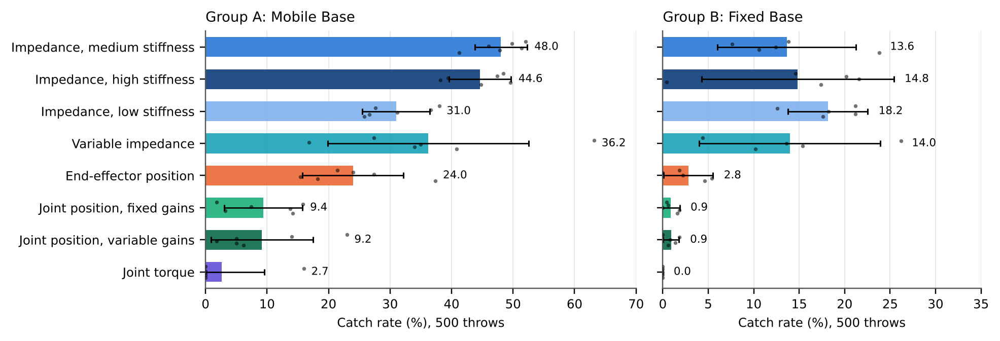

A controlled comparison of eight arm action spaces for catching objects in flight with a mobile manipulator and a dexterous hand, trained with reinforcement learning in simulation.
The policy always commands the base and the fingers in the same way. Only the arm action changes, and with it the controller that turns the action into joint torques. Select an action space to see how it works.
| Group A | Group B | Group C | |
|---|---|---|---|
| Base | Mobile | Fixed | Mobile |
| Throws | Not aimed | Aimed within reach | Not aimed |
| Learner | PPO | PPO | PPO and TD-MPC2 |
| Action spaces | All eight | All eight | Medium stiffness, variable impedance |
| Seeds | 6 | 5 | 5 per learner |
| Tracking stage | 8 million steps | 4 million steps | 5 million steps |
| Catching stage | 6 million steps | 6 million steps | 5 million steps |
A selection of the results. The full results will be released upon publication.

Rollouts of trained policies for every action space, with the Mobile Base and the Fixed Base, are on the Hugging Face Space.
The code, the trained policies and the evaluation scripts will be released upon publication.
The catch rate and the learning curves of every seed are in the results folder.
The citation for this work will be added upon publication. This work builds on the Catch It! environment:
@article{zhang2024catchitlearningcatch,
title={Catch It! Learning to Catch in Flight with Mobile Dexterous Hands},
author={Zhang, Yuanhang and Liang, Tianhai and Chen, Zhenyang and Ze, Yanjie and Xu, Huazhe},
year={2024},
journal={arXiv preprint arXiv:2409.10319}
}